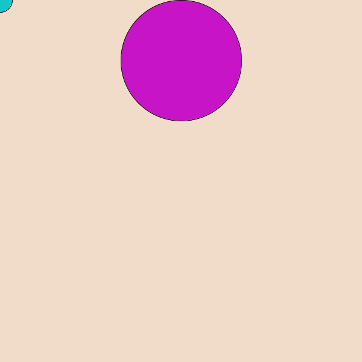

<<<<<<< HEAD
Game 1:単発避けゲー
次のようなゲームを作ります． マウスで水色の円を動かして，紫色の円から逃げるゲームです． 
基本
まず，マウスを追従する自機(円)を描きます． 背景色や大きさは適当に設定してください．

void setup(){
size(600,600);
}
void draw(){
background(240,220,200);//背景
ellipse(mouseX,mouseY,40,40);//自機
}
このプログラムでもいいのですが，後で衝突判定などを行いたいときに，自機の現在地や大きさが欲しくなるかもしれません．そこで，次のように書き直します．
void setup(){
size(600,600);
}
void draw(){
background(240,220,200);//背景
int px=mouseX,py=mouseY,pr=20;
ellipse(px,py,pr*2,pr*2);//自機
}
次に敵(円)を描きます．敵は，動かすことが前提なので，座標や半径を変数として取っておきます．
int ex=300,ey=100,er=40;//敵の座標，半径
void setup(){
size(600,600);
gifset();
}
void draw(){
background(240,220,200);//背景
int px=mouseX,py=mouseY,pr=20;
fill(20,200,200);
ellipse(px,py,pr*2,pr*2);//自機
fill(200,20,200);
ellipse(ex,ey,er*2,er*2);//敵
gifdraw();
}
さて，この状態では自機が敵に衝突しても何も起こりません．当たり判定を付けましょう． 2つの円の座標と半径がそれぞれ与えられたときに，円同士が重なっているかどうかを判定できれば良いです．
2つの円が重なっているときは，次のことが成り立ちます．
2つの円の半径の和>2つの円の中心同士の距離
よって，これをif文で実装すれば良いです．
float distance = sqrt((px-ex)*(px-ex)+(py-ey)*(py-ey));//三平方の定理で，中心同士の距離を求める
if(distance > pr+er){
//当たった判定
}
別の実装方法も考えられます．
int dx = px - ex;
int dy = py - ey;
int sr = pr + er;
if( dx*dx + dy*dy < sr*sr ){
//当たった判定
}
肝心の，当たったときの処理ですが，とりあえずstop();関数を入れておきましょう．stop()関数はウィンドウの状態を維持したままdraw()関数の実行が止まります．
文字の描画
このままでは，敵に当たると急に動かなくなるので，ユーザーは困惑するでしょう．「GAMEOVER」の文字くらいは欲しいですね．
Processingには，文字を描画する関数が用意されています．
textAlign(LEFT,TOP);
textSize(128);
text("GAMEOVER", 00, 00);
text(S,x,y)は文字列Sを(x,y)を基準に描く関数です．
textSize()関数とtextAlign()関数はtext()関数で描かれる文字の大きさや基準点を指定しています．
詳しく知りたい人は調べてみてください．
文字の色はfill()で設定できます．

敵を動かす
敵を動かせば一応ゲームとして遊べるようになります．
敵の座標はex,eyの変数で管理しているので，これを変えてやれば良いです．
敵の動かし方ですが， プログラミング入門/動きを作ろう プログラミング入門/分岐処理 を参考にして作ってみてください．
最終的なプログラム(一例)
プログラム
int ex=300,ey=100,er=100;
int vx=20,vy=10;
void setup(){
size(600,600);
}
void draw(){
background(240,220,200);//背景
int px=mouseX,py=mouseY,pr=20;
fill(20,200,200);
ellipse(px,py,pr*2,pr*2);//自機
fill(200,20,200);
ellipse(ex,ey,er*2,er*2);//敵
int dx = px - ex;
int dy = py - ey;
int sr = pr + er;
if( dx*dx + dy*dy < sr*sr ){
textAlign(LEFT,TOP);
textSize(128);
fill(255,0,0);
text("GAMEOVER", 00, 00);
stop();
}
ex+=vx;
ey+=vy;
if(ex>=600||ex<0){
vx=-vx;
}
if(ey>=600||ey<0){
vy=-vy;
}
}
さらにゲームらしく
このゲームに付け加える要素として次のようなものが考えられます．
- 避けた続けた時間をスコアとしてゲームオーバー時に表示させる
- 敵のスピードがだんだん早くなるようにする
- ゲームオーバーになったあとにリトライできるようにする